Automating Tasks: Saving Time & Money
⚠️ Disclaimer (Read Before Using This Demo)
This is an independent, personal project developed from scratch and not affiliated with nor based on proprietary code, data, or models from Sander Geophysics Limited (SGL).
While it explores a similar problem—time series anomaly detection—none of SGL's internal tools, datasets, architectures, or model parameters were used, shared, or reproduced here. This is a public-facing demonstration built for educational and exploratory purposes only.
For ethical and legal clarity: this model is a functional copy inspired by the concept only, not the original implementation.
Original Upload: 2023-07-15
Last Updated:
Test the Model
Upload an image of a time series (ideally 640x640px) to see if our model can detect anomalies.
View all inferences uploaded and results here in the API's dashboard
Drag & drop your time series image here or click to browse
Analyzing image...
About This Presentation
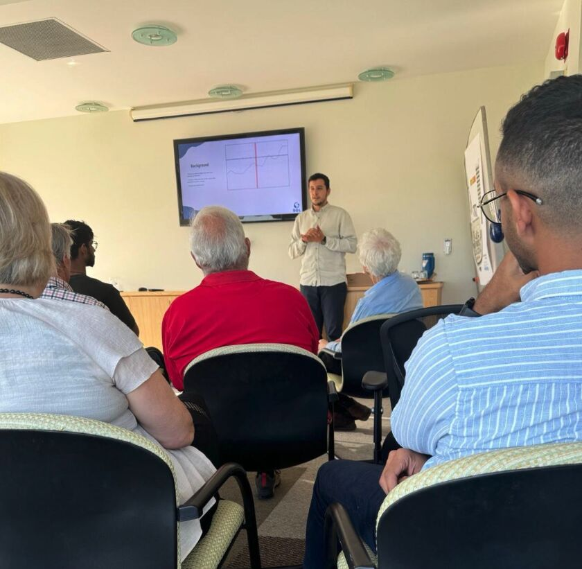
In September I gave a short talk at a KEGS (Canadian Exploration Geophysical Society) meeting demonstrating the usage of ML in airborne geophysics. This was the culmination of over 6 months of labor in developing an end-to-end pipeline to train a model to outperform humans in classifying anomalies. Specifically, I framed a time series anomaly detection problem as a classification problem, fed to a simple Neural Net.
Note: The underlying code and data for this project are proprietary to Sander Geophysics Limited (SGL) and cannot be shared publicly. However, I'm pleased to share the presentation which outlines the approach and results.
View Full Presentation PDF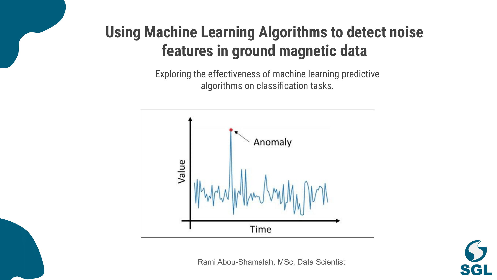
Context
Ground magnetic data is vital in airbornegeophysical surveys for removal of artifacts (anamolies) in order to correct magnetic data.
Project Objective
- Automate anomaly detection using machine learning algorithms that outperform humans
Why Now?
Recent advances in machine learning and neural networks make it possible to tackle challenges that traditional rule-based algorithms could not overcome.
Background & Challenges
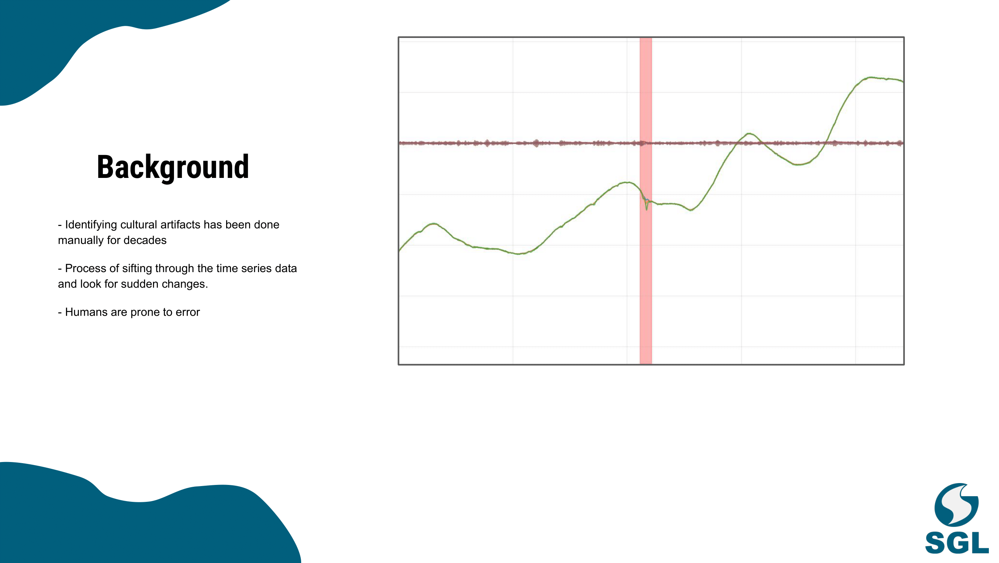
The Problem
Manual Workflows
- At Sander Geophysics, with projects across the world, the current standard flow is to manually sift through the time series data for anomalies.
- Mental fatigue leads to increased error rates
- Process is time-consuming and inefficient, and unnnecessary.
Variability of Anomalies
Anomalies are highly project-dependent. A spike in one dataset may signify an anomaly, while in another, it could be noise. This variability makes explicit algorithms fail consistently.
The Solution
- Automate anomaly detection while maintaining human-level accuracy
- Generalize across projects with different anomaly characteristics
- Free up experts to focus on high-value tasks
Technical Approach
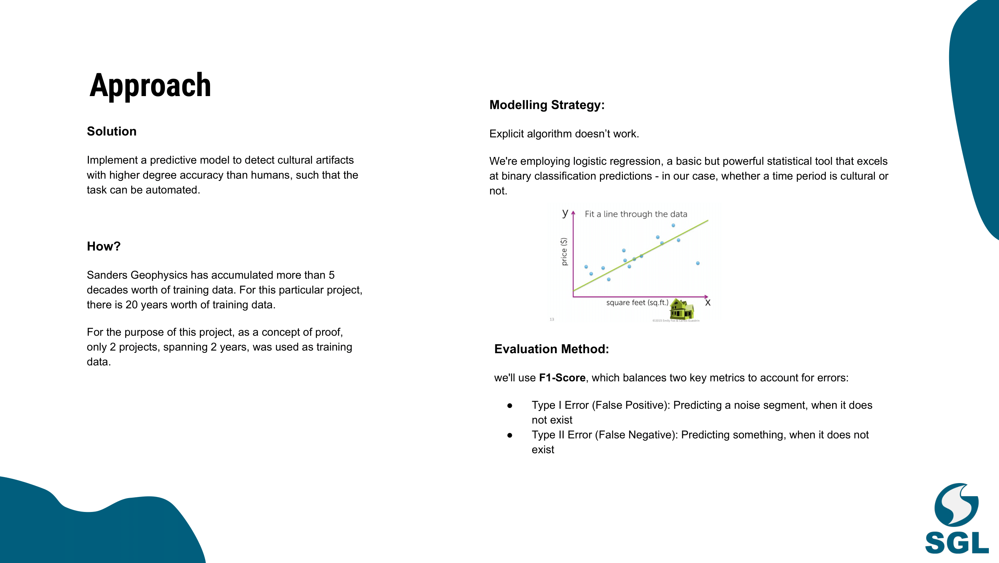
Pipeline Components
- Data Extraction: In-house Python API for database interaction
- Preprocessing: Local database recreation and imbalanced dataset handling
- Feature Engineering: Derived features from raw magnetic data
- Model Development: From Logistic Regression to Neural Networks
Feature Engineering Details
- Rolling standard deviation
- Signal derivatives (1st and 2nd order)
- Signal differences and moving averages
Exploratory Data Analysis
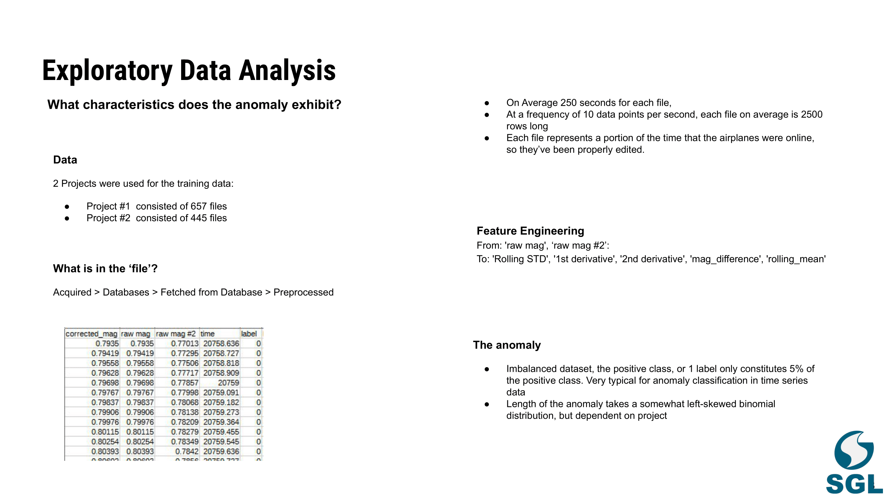
Dataset Overview
Data Characteristics
- Highly imbalanced dataset: Only 5% of labels represent anomalies
- Left-skewed distribution of anomaly lengths
- Each file represents ~250 seconds of continuous data
Feature Engineering
Key Features Derived from Raw Data:
- Rolling statistics (mean and standard deviation)
- Signal derivatives to capture abrupt changes
- Signal differences to emphasize transitions
Anomaly Insights
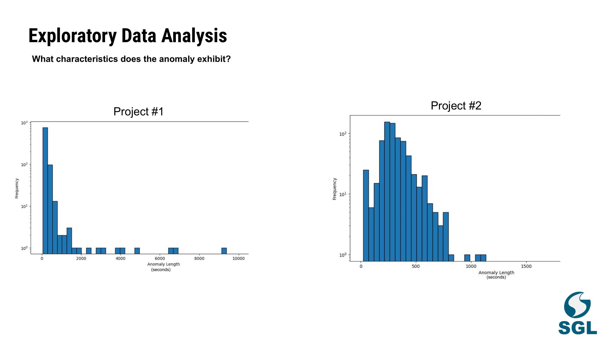
Variability Analysis
Anomalies exhibit significant differences not just in magnitude but also in frequency and duration across projects:
- Project 1: Shorter, more frequent anomalies
- Project 2: Longer, less frequent anomalies
Distribution Analysis
Key Findings
- Histogram analysis reveals project-specific patterns
- Anomaly lengths follow different distributions per project
- Temporal clustering varies significantly between projects
Why It Matters
This variability reinforces the need for a flexible model capable of adapting to project-specific patterns. Traditional rule-based approaches would struggle with such diversity in anomaly characteristics.
Model Performance Overview
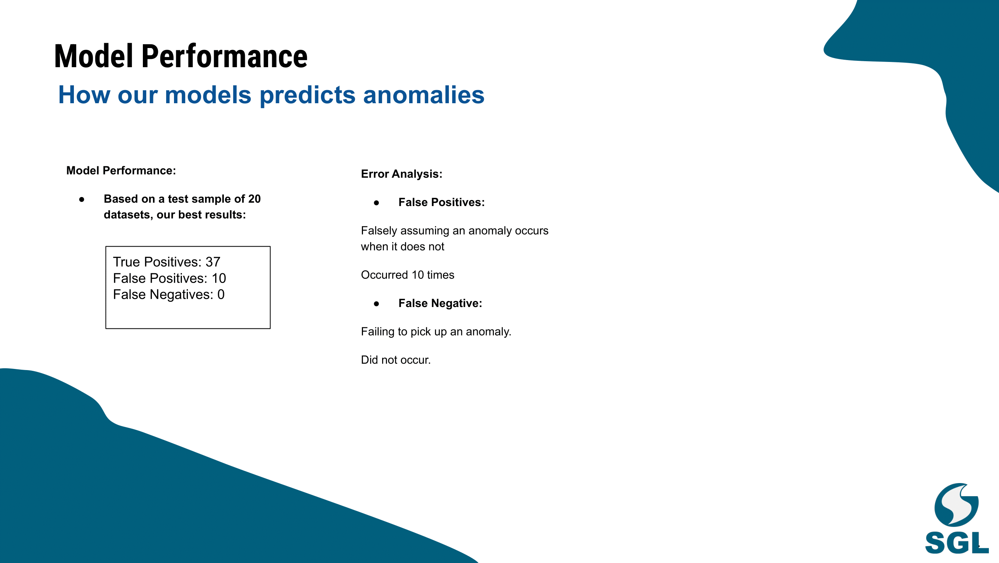
Performance Highlights
- Perfect recall with zero false negatives
- Strong precision despite challenging edge cases
- Balanced performance across both pilot projects
Detailed Analysis
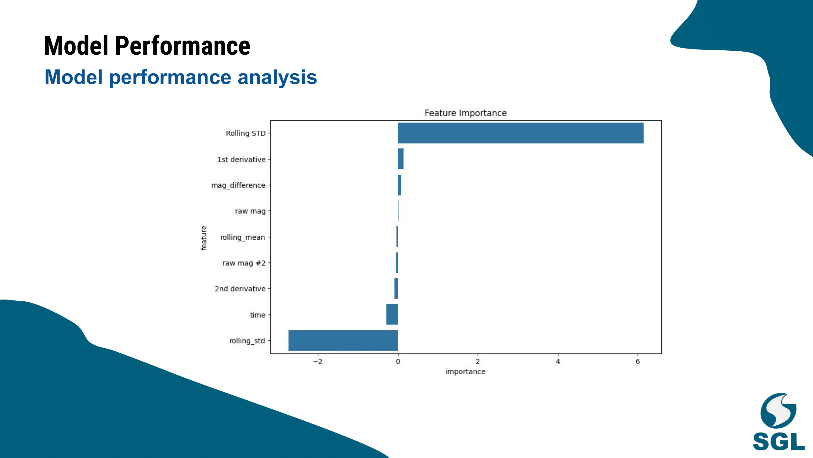
Visual Results
Time-series plots demonstrate strong alignment between predicted and actual anomalies, with key observations:
- Accurate detection of anomaly boundaries
- Robust performance across varying anomaly lengths
- Consistent detection in noisy regions
Areas of Interest
Regions where the model showed exceptional performance:
- Complex overlapping anomalies
- Subtle anomalies in noisy backgrounds
- Extended duration anomalies
Error Analysis
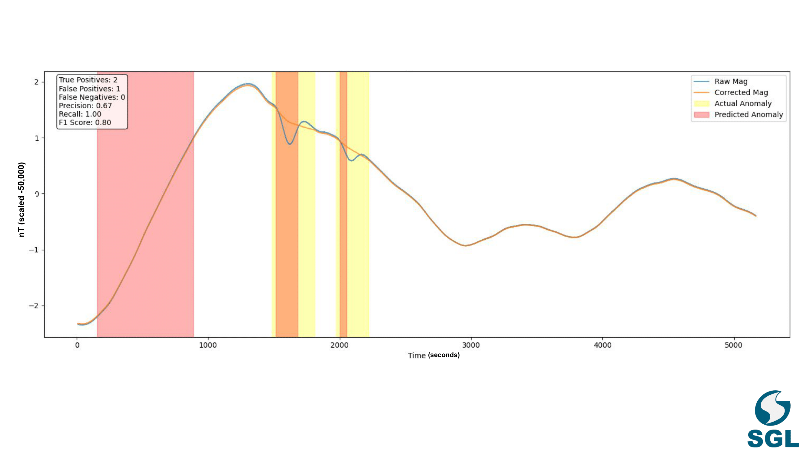
False Positives Analysis
- 10 cases of noise misclassified as anomalies
- Most false positives occurred in regions with overlapping signals
- Edge cases identified for future model improvements
Robust Detection
- Zero false negatives in the test sample
- Perfect recall rate demonstrates reliable anomaly detection
- Conservative classification approach prioritizes safety
Impact Assessment
The error analysis reveals a conservative bias in the model's predictions, favoring false positives over missed anomalies - a desirable characteristic for this safety-critical application.
Future Improvements
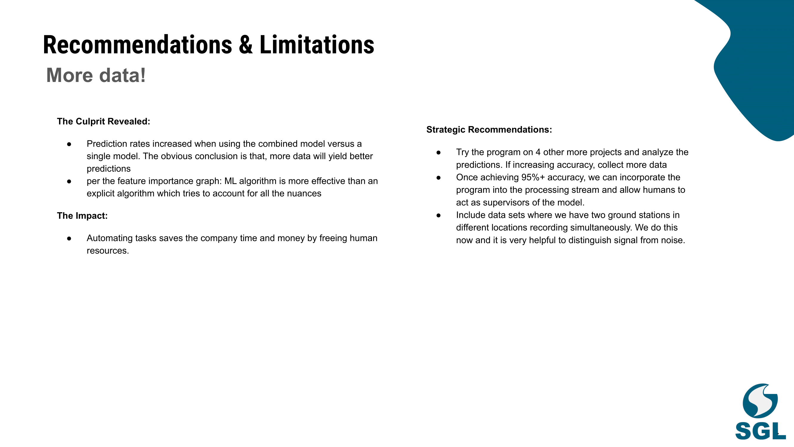
Recommendations
- Expand dataset to include more projects
- Implement dual-station integration
- Transition to operational pipeline with human oversight
Feature Importance Analysis
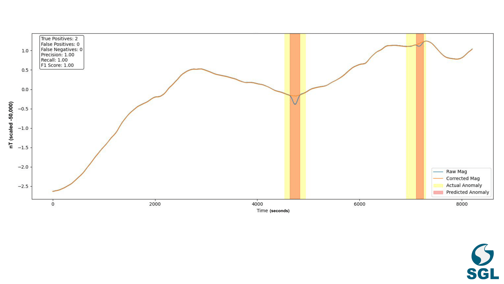
Key Findings
- Rolling Standard Deviation emerged as the dominant predictor
- Signal derivatives provided crucial supplementary information
- Feature combinations enhanced model robustness
Feature Rankings
Critical Insight
Feature engineering proved crucial to model success, highlighting the importance of domain knowledge in machine learning projects.
Real-World Detection Examples
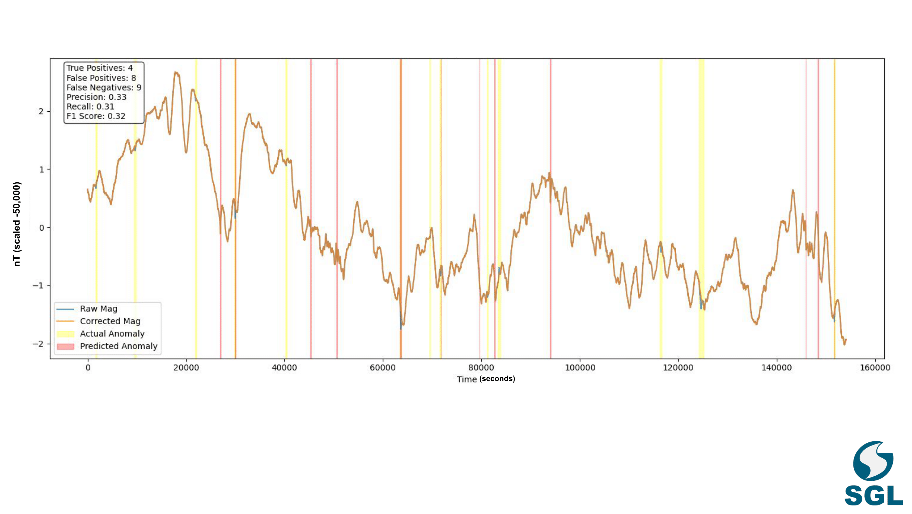
Visualization Insights
- Strong alignment between predicted and actual anomalies
- Clear identification of anomaly boundaries
- Effective handling of varying anomaly durations
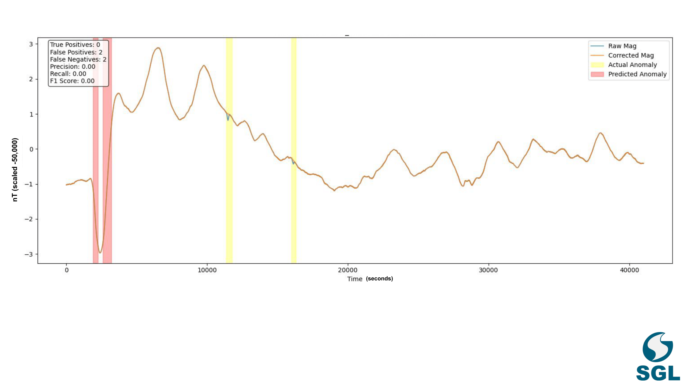
Key Observations
- False positives cluster in high-noise regions
- Model successfully distinguishes between similar patterns
- Consistent performance across different noise levels
Pattern Recognition
The visualizations demonstrate the model's ability to recognize complex patterns while maintaining robustness against noise and artifacts.
Future Directions & Impact
Key Recommendations
- Expand Dataset
- Include more projects to improve generalizability
- Gather data from diverse geological settings
- Dual-Station Integration
- Incorporate simultaneous readings from multiple ground stations
- Better differentiate between signal and noise
- Operational Integration
- Transition to production pipeline at 95% accuracy
- Maintain human oversight for edge cases
Current Limitations
- Proof-of-concept uses limited dataset subset
- Model performance may vary with new datasets
- Requires rigorous validation across different geological settings
Project Impact
- Thousands of labor hours saved annually
- Increased accuracy in anomaly detection
- Improved operational efficiency across global projects
- Enhanced data quality for downstream analysis
Conclusion
This proof-of-concept demonstrates the viability of machine learning for automated anomaly detection in ground magnetic data. The successful implementation shows promise for scaling across global operations, potentially revolutionizing how we process and analyze geophysical data.
About This Presentation
In September I gave a short talk at a KEGS (Canadian Exploration Geophysical Society) meeting demonstrating the usage of ML in airborne geophysics. This was the culmination of over 6 months of labor in developing an end-to-end pipeline to train a model to outperform humans in classifying anomalies. Specifically, I framed a time series anomaly detection problem as a classification problem, fed to a simple Neural Net.
I'm glad to have taken a middle-ground approach to simplifying the technical concepts, as some audience members had an understanding of ML.
View Full Presentation PDF